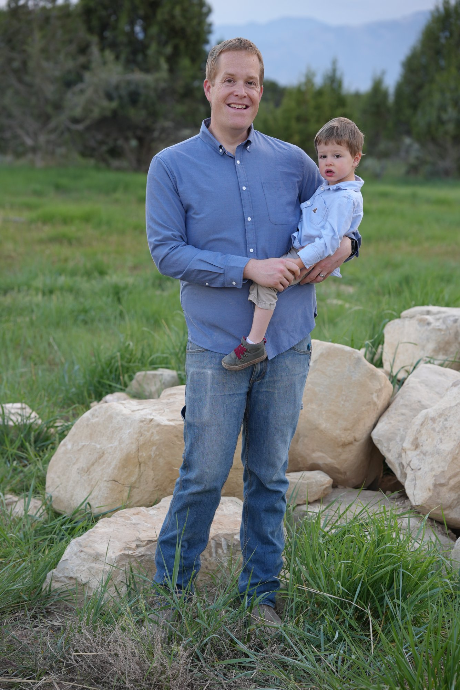

I'm Tyler Rencher — home designer, software engineer, and the person who actually lives in the kind of home I design for you.
That didn't happen. What I learned about myself is that I love to design and build real things. I went on to spend thirteen years in my profession as a software engineer, solving complex problems that required systems thinking, careful planning, and the discipline to get things right before they became expensive to fix.
Those skills are exactly what designing a home demands.
My family and I were living near Seattle when Covid changed everything. The commute that had been driving me crazy diappeared overnight, and the public service failures and supply shortages that came with the pandemic crystallized something my wife and I had been quietly considering for years: we wanted to be somewhere rural, somewhere more self-reliant, somewhere that felt like ours.
I wanted independence from utility providers — but my wife still wanted her normal appliances, good lighting, comfortable indoor temperatures year-round, and large windows that bring the outside in. That wasn't a compromise. That was a design challenge.
"I wanted to live off-grid without asking my family to give up anything."
We found 40 acres two miles outside of town — covered in juniper trees, with an unobstructed view of the North Sanpete valley and the two most prominent mountain peaks in the area. No power lines. No water. No sewer. Just land. Because we were going off-grid, we didn't need any of those things extended to us, which opened up land options that weren't available to everyone else.
I designed the home myself and managed the build from the ground up because I couldn't find anyone to help that had done it before. It took 18 months to learn CAD software, building codes, municipal codes, load calclations, and much, much more.

Tyler with one of his sons on their 40-acre property outside Spring City.
40 acres
Outside Spring City, Utah — purchased with no power, water, or sewer. The off-grid constraint became an advantage.
A family of nine
My wife and seven children — two of whom were born in the house I designed — live there full time. This isn't a retreat. It's our permanent home.
Fully off-grid, fully modern
Solar, battery storage, and a complete water system. Normal appliances. Normal lifestyle. We choose to ration power on the stormiest winter days — not because we have to, but because it is a good skill to build and a test of the house systems.
13 years in software
Professional .NET software engineer. The systems thinking, planning discipline, and stakeholder management muscle I built is directly applicable to home design.
The first obstacle was legal. Despite our property sitting on a county road, we had no legal access to the land — the county held no easement for the road. We had to purchase half the road surface from our neighbor to establish legal access before we could do anything else.
Getting the off-grid electrical system approved was its own challenge. Most people who build off-grid homes here do it quietly, after the fact. We went through the full permitting process from the beginning. I had to work with them patiently and respectfully to get what we needed.
That's where my software background mattered in ways I didn't expect. In software, I spent years managing complex projects that involved teams of people who didn't particularly care about what I was working on — but whose cooperation I needed anyway. You learn quickly how to make other people's problems your problems, how to speak their language, and how to get to yes without friction.
County employees, contractors, and subcontractors all respond to that approach. I know how to be the kind of client — and the kind of designer — that people want to work with.
In every home I've ever lived in, the floors were cold in winter, the air at the ceiling was hot, and the furnace was noisy. Everybody I talk to assumes that's just how houses are, and they are right. But they don't have to be.
In my home, the air temperature at the floor and the ceiling is nearly identical. The floors are warm. The furnace runs quietly in the background. We use a forced-air heat pump system — nothing exotic. What made the difference was the building envelope and HVAC sizing and duct design.
I spent more time designing the air sealing strategy than any other part of the house. Continuous barriers. Careful detailing at every penetration, rim joist, top plate, and window opening. It is the least visible work in the entire project — and the thing that determines whether a home is actually comfortable to live in.
The rest of the house works exactly as designed. I'm proud that I landed a result like that on the first attempt. Two of my children have been born in that house. My family lives there full time. I don't have the option of shipping a new version.
"Unlike software, where you can release a new version, you can't release a new version of a house. This may be the last one you ever build."
Defects are cheapest to fix in the design phase. As the build progresses, changes become 10-100x more expensive.
Time and money invested in design can save tens or hundreds of thousands of dollars during construction.
Following the design details will make or break your project. I stay involved to keep your general contractor can build the details into the house.
Every person I've spoken to who has built a custom home says the same thing: they never want to do it again. Not because they regret the result — but because of the relentless pressure of making hundreds of decisions under time and financial pressure, mid-build, with contractors waiting.
My process is designed to prevent that experience.
I'll ask you more questions than you expect early on. What does a typical Tuesday look like in your household? How does your family move through a kitchen? Do your kids do homework at the table or in a dedicated space? Where do the muddy boots or backpacks go when you come in from outside? These questions might feel too specific or detailed, but they're what separate a house that functions from a house that fits. Take a look at my preparation guide to help you feel confident going into our first conversation.
My goal is to help you make as many decisions as possible before anything is built — when changing your mind costs little. My clients still face decisions during the build. But they face far fewer of them, and none of the fundamental ones like "I didn't know there was going to be a beam there".
I also stay involved after the drawings are complete. Very few general contractors have experience building high-performance homes. Most need some questions answered to execute the efficiency details in the plans. That's not a criticism — it's just a reality of the industry. I make myself available to answer your general contractor's questions. Your build should go smoother because I'm reachable.
I'm currently accepting a limited number of projects for Fall 2026 start dates. Tell me about your land and what you're imagining — even if it's still just a feeling.
Begin Your Project